HOMESTEAD HANDBOOK
The chickens turn out to forage for themselves on our place. They don't run wild all over, you understand: A snug henhouse lean-to along the outside wall of the horse's barn stall lets the flock come home to roost at night and to shelter through a heavy rain. During our hard New England winters, the flock is forced to coop up and live on dry stores (homegrown, whenever practical), like the rest of us. But from the first warm days of March till the snow returns in earnest late the next December, our chickens range-free as a bird, you might say-to work for their own supper. Cash sale or barter of extra eggs and an occasional dressed capon more than pay for what feed and equipment needs buying, so the poultry products our family enjoys are free for the time spent looking after the flock-perhaps half an hour a week, egg collecting included (once the operation is up and going on its own).
There's nothing new about running poultry free, of course. It used to be done that way all over. A natural part of every old-time farmstead was a half-wild flock of chickens scratching around the barnyard and fields after bugs, native seeds and berries, plus whatever feed grain got past (or passed through) the larger farm animals.
Today, though, when you set out to raise your own chickens, you'll find that a lot of published information tries to get you into factory-style production, just on a small scale. Guess the Aggy-school-trained experts don't know any different. So they urge you to set up a miniature version of a commercial "broiler factory"-wire mesh cages tiered up one on top of the other-in your cellar. You supply medicated water and preground mash, then execute the inmates after eight weeks in solitary, during which time they don't get to scratch in the dirt or see the sun or engage in what passes for love 'n' marriage in Chickenland. I decided early on that I wouldn't raise plastic chickens on my own place, and you don't. have to either. Here's how to resurrect those fine old-time skills and raise egg-and-meat birds as close to nature s way as makes practical sense anymore.
Prospecting Your Land
The idea is to convince your birds to get out into the country and eat as much as they can for free You don't need a lot of land; a flock can find a whole bunch of bugs and seeds on an acre or two. The more the better, of course, and our flock has several square miles of wild mountain to wander over, if they want. However, they restrict most of their travels to the orchard and woods that abut the henhouse side of the barn, as well as the barnyard and a couple of pastures in the other direction. The flock patrols perhaps five acres in all, seldom going much over 100 meters from the house. I can't prove it, but I would think that this is close to the natural territorial limit for a flock of a dozen or two domestic chickens.
Before field-running your own chickens, be sure that quail, pheasant, turkeys, grouse, prairie chickens-or any other member of the chicken's avian family of gallinaceous birds-live wild in the area, or did before civilization struck. The Galliformes comprise an order of largely dry-ground-feeding birds; we call the barnyard birds' typical food gathering habit scratching, If any Galliformes from quail- to turkey-size are indigenous to your area, chickens ought to find a good supply of native food in your woods, too. If all you have in the way of local birds are pigeons and English sparrows, though, you'd best wait till you can get farther out into God's own country. Chickens will eat most anything that grows, but not much grows on asphalt.
Remember, Chickens Have Been Domesticated for Centuries
Bear in mind that, kin to native quail and grouse or not, a domestic chicken is about as well designed for a life of hardy self-reliance in the wild as a gorgeous, doe-eyed jersey cow. Both have been hand bred by humans for aeons to convert ground corn into "people food," not to fight the elements or live on bugs and weed seed in a lean 'n' mean existence.
A hen needs all the water she can drink and the equivalent of about a half cup of whole grain to produce the 50 calories and 5 grams of protein in each egg she lays ... plus another half cup or so of grain each day to sustain herself. She'll find a lot of feed and fluid over a day's foraging on bugs, seeds, berries, and nibbles of plants that occur naturally during growing season on most fairly open North American landscapes. But nature didn't plan a menu to support gallinaceous birds everywhere. The deep evergreen woods of Wisconsin, a salt marsh along the Oregon coast, Rocky Mountain high meadowland, a clean-aired dry butte in Arizona, and any number of other habitats may be glorious places for people to live and grow gardens. However, in these places chickens must be fully subsidized. Even if you are surrounded by teeming hordes of grouse and pheasant, unless you want to run charming but unproductive little bantams or experiment with food production of exotic chickens (bred originally for show, and closer to native strains in feeding and nesting behavior if not in appearance), plan to supplement the native forage 365 days a year. More on that later.
Getting Birds
If there were only one piece of advice I could offer a novice poultry-keeper, this would be it: Start out with hatchery poultry, even if you have to pay a dollar a head and save up to have the cash on hand. With experience, you will be able to tell good birds from bad. But too many first-timers buy a flock from some suburbanite who advertises in the paper-usually a "wanta-be" homesteader who's gotten tired of daily chores-and import someone else's problems onto their own places. I learned this indirectly years ago. Mel and Sweet Jan got themselves a flock of laying-age leghorns free for the hauling. Within a week, the birds' putty white plumage was blowing around the farmyard. Fell out from a plague of feather mites, someone suggested, most likely contracted unbeknownst to anyone from pigeons freeloading in the birds' former pen near town. But here was this shiny-new country couple, maybe six weeks out of Boston, with a dozen sick chickens ... and all of them running around red and nekked and screeching, in helpless misery. (The chickens, I mean. Mel and Jan stayed decent, though troubled, through it all, so far as I know,)
I advise then that you get day-old chicks from a well-established hatchery. Especially if these are your first farm livestock, you'll really enjoy brooding them up, and you'll learn a lot. You'll find brooding directions in most any homesteading or poultry book. If you don't know of a nearby hatchery, order from Sears, Roebuck & Co. You can get the "Farm & Ranch" catalog from any Sears catalog store or for a dollar by mail from: Sears, Roebuck & Co., Dept. 139K "SPECIALOGS," 925 S. Homan Ave., Chicago, IL 60607. They don't raise the birds right there at 60607, Inc., but they buy from the best hatcheries near you ... and deliver small quantities more cheaply than you can get them by buying direct. Although the hatcheries produce most of their chicks for spring sale, you can get them through the mail from Sears almost any week of the year.
I suggest that you'd do best starting a home field-run flock in midsummer. That way, there's no worry about the chicks freezing in the back room of the post office. Most of the brooding can be done outside. Also, the birds will fuel a lot of early growth on free food and, most important, will mature as field-wise range animals, not a bunch of dumb yard birds. They will have six months' age on them and be producing the first small "pullet"sized eggs in midwinter. By the time they are laying flat-out and full-size, it will be spring, when birds reproduce in nature. Hens will feel like laying then, and you may find you have an appetite for a lot of egg energy. (I theorize that pre-A&P Homo sapiens must have evolved acceptable cholesterol levels by gorging on eggs only when nature provided them, just in time to fuel the spring-season burst of energy.)
Don't order leghorns (often pronounced "leggerns"), the prolific white-egg-laying breed, or any of the small-boned, white-feathered "superlayers" hybridized from them. These are all neurotic, inbred little critters suitable for heated and air-conditioned commercial egg factories, but they aren't worth eating and don't have enough to them to survive on their own over a hard winter. I've always run one or a mix of the old-time, all-purpose pure breeds: Rhode Island or New Hampshire Reds, Barred or White Rocks. They are big and hardy, produce eggs for years, and fill a stewpot nicely. Their eggs are brown, of course ... the only proper color for an egg, as any New Englander will tell you. Purebred chickens also reproduce true to breed, as you'd expect. The crosses and hybrids tend to produce "throwbacks" that often show the less desirable traits of each parent.
For a self-perpetuating flock, you'll need a pair of roosters: the extra for insurance in case the first one runs out of steam on you. Hatcheries sell young hens (pullets), roosters (cockerels), or as-hatched (50:50). You can buy 25 as-hatched chicks to start a flock, and caponize the excess males. (Caponizing is major surgery and a separate topic.) Or, as we did it most recently, you can drive to the hatchery on a spring afternoon and pick out an assortment of hens. You can later swap for a pair of young roosters from a healthy local flock.
Feed the chicks commercial chick starter (finely ground, gently medicated grain that will prevent chickhood diseases and which you can get in 50- or 100-pound sacks or by the pound at any feed store) for at least the first month. Then, as they grow up, train them to go to field in the day and come home at night. You'll need a coop that provides each bird with a square foot of elevated roosting space and at least an equal amount of floor space, with a loose, absorbent litter covering, protection from varmints, and good ventilation and freedom from drafts ... plus feed, water, and perhaps a mineral supplement in proper varmint and freeze proof containers. Again, see the books.
Next to a sound roof, your most important coop furnishing is the nest box. Make a nest that's dark as possible and that's protected top, bottom, and on all sides but has a clear escape route. Place it a couple of feet above the floor (so the hen can scratch around underneath) but with a rough-plank ramp from floor to door for easy access. I find that a single large box about four feet long, two feet deep and high, with a single hen-sized opening in front, works best. Up to four hens will share it at the same time, and competing for time on the nest seems to add incentive. Sometimes they'll line up on the ramp, cackling nastily at one another. But don't scrimp on nest boxes. Without sufficient nesting space, the hens will lay randomly in the fields. In no time the unattended eggs will attract raccoons, skunks, and other nocturnal egg and chicken-loving predators. (If you ever suspect that eggs are being laid afield, simply shut the flock up for a week, begin releasing them for short intervals in the late afternoon, and slowly expand field time into the earlier part of the day.)
Always keep a new flock cooped for a few days until they are settled in and know where home is. Then open an easily closed and secured chicken-sized door facing out on the field you want them to range into. Young birds will be shy as they try out freedom for the first time. Live bugs will cause mass hysteria, and the first time another bird flies over, casting a hawk like shadow, an ancient instinct will send the chicks scattering in a panic.
Around this time, begin dividing your property into chicken and no-chicken zones. Droppings of adult birds come in huge, gelatinous blobs that glue to your shoes till they reach a house's rugs or a truck's accelerator pedal. So start early: Put up fencing, train your dogs, and manage the flock to contain the birds with minimum hassle. Don't leave anything edible at pecking level around the house or anywhere else you don't want to invite patrolling chickens, pets' food bowls included. Most important, train the flock to a daily routine so they leave the coop at dawn to go directly into the fields and stay there eating for free till dusk. I found that siccin' my dog on them at daybreak for a week of mornings each spring is effective in getting the flock afield, at the cost of only a few tail feathers. The birds erupt in a great fuss each time, and Dog Harley loves it. Of course, having been raised around mother hens who put up with no puppy nonsense a-tall, ol' dumb Harley doesn't realize that the birds are edible. No guarantee that a smarter dog won't lunch off the entire flock, however. [EDITOR'S NOTE: When we pointed out to John that "free range" neighboring dogs may also create problems, he replied, "Pick your own remedy. I use a 10-gauge loaded with rock salt. "]
A good field-training routine is to remove the feeder from the coop at night (the feeder only; never withold water from chickens). Shut the birds in till midmorning. Most eggs will be laid by then. Then attract the hungry flock into the field by leading them out behind a scant trail of food. Leave the empty feeder in the field during the day; then return it, filled, to the coop for an hour or so at dusk. The birds will follow their supper can in, even if they are eating off the land.
If there's no natural stream or spring in the field for outdoor drinking, you can make one. Lay out a garden hose, set a bowl in the soil beneath the open end, and let the water trickle during the day. Lacking water afield, the flock will come in frequently, especially during summer heat, and may just hang around the house all day, eating money.
The Great Chicken Myth
Chickens will do a number on potato beetle larvae and other garden pests, right? And geese will eat the grass between the vegetable rows too, right? I guffaw my way through that one in an early issue of every new country-livin' magazine that comes along. Don't you believe it! In my experience, any barnyard fowl will do right only after it's defoliated the broccoli seedlings, pulled the crow's trick of yanking new corn to gobble the sprouted kernels, and nipped out the brightest side of every ripe strawberry.
To keep the flock from eating out the garden or stinking up the baby's play yard, fence it. I find that a string of poultry netting, hung loosely between stakes put in about 6 feet apart, does best. (It rolls up out of the way for tilling, manure-spreading, and all.) Chickens can't get a good foothold on really floppy netting (for what it's worth, neither can a woodchuck, unless it has a lot of time to ponder the problem). I clip the long feathers on one wing of any bird that takes to flying over, though I prefer to leave them able to fly as well as they can, for self protection in the fields. Then never, ever turn the birds into a garden plot, even in the fall, when there are heaps of soft tomatoes just begging to be turned into eggs. Otherwise, the chickens will head right for the garden come next spring ... lying in wait to attack when the dog is tied, all you folks are out fishing for the afternoon, and the peas are just up. [EDITOR'S NOTE. Some people are having success using poultry in the garden under certain carefully controlled conditions. See page 58 of this issue's mini-manual, "Sustainable Agriculture: Designing for Small Farms and Homesteads."]
Losses
In over twenty years of field-running small flocks of poultry in a half dozen isolated rural locales, I guess I've never had to deal with an epidemic because the foundation stock is sound, the air clean, the water good, and the diet hearty. I've never seen a tick; I imagine the chickens eat them. We did have an internal problem-coccidiosis-in a few birds once. This is a protozoan gut infection indicated by bloody droppings, and it can spread quickly. I cured it in a few days with medication from the feed store. With any flock wide symptom, I'd turn to the poultry section of the Merck Veterinary Manual first, and call my vet second.
I'm asked if we lose many chickens to foxes or poisonous plants or poachers. Not that I know of. There's an annual attrition rate of about 10%, but I've never had a bird jes' disappear-or maybe I've never noticed it. (With a dozen or two chickens around, I don't take a bed check.) In time, hens die of natural causes like everything else, and I've never done an autopsy. One rooster came in last summer all chewed up-evidence of an animal attack. I dabbed gentian violet horse medicine on the worst rips and tears. He moped around the coop for two or three days and recovered fully, sans only his tail, which was bitten clean off; he's now a certified "bobtailed" rooster. Every so often an old bird just gets logy and goes over to a corner of the coop, sits down, and closes her eyes. If she doesn't recover enough to begin moving around in a day or two, she'll get unpleasant to be around, so I put her out of all our misery and bury her deep under the compost. (This is an individual, now. If symptoms of any sort show up in more than one bird, I go to Merck, quick.) There are always a few hens that decide to raise a fall brood and molt in November; sometimes one won't feather out in time for deep winter. Once in a while we have broken wings or legs, which really can't be mended in adult chickens and are occasion for an unscheduled coq au vin.
Fully beaked and spurred, our feisty half-wild birds have enough space to roam in and enough natural fiber to eat so that they don't often peck one another to the point of injury (a recurring problem in overcrowded factory flocks). Sometimes they'll go after shiny new blood spots on a hen receiving so much attention from the roosters that she's gotten defeathered and scratched where her suitors have sunk their claws into her shoulders or their beaks into the back of her head. Gentian violet goes on the sore spots, and if the pecking continues, I'll cage the hen for a week or so ... keeping her inside the coop so she'll retain social status, if not freedom.
Replacement Birds
With field-run, well-roostered hens, there's no need to buy chickens after the first batch. Right now, my daughter Martha has two dozen eggs within a few days of hatching in an old fish aquarium turned incubator. We also have cooperative hens. At least one of the purebred Rhode Island Reds will stay afield nights for part of May and into June, usually unnoticed, as she comes around all the time to get food and water. Then one day Doctor Feel-Good, Martha's strawberry roan gelding, will start prancing and blowing out both ends at the pasture gate, and there's Old Red Hen with a dozen yellow chicks steadily ripping off his grain.
Supplementary Feed:
Grow It or Buy It?
Now comes the real crunch: deciding on a proper mix of bought versus wild versus home-raised poultry feed. My figures show that field-running a flock of domestic poultry reduces its consumption of dry feed by half. Maybe by a little more, but not much. I suppose I could withold dry feed and they'd work harder in the field, but I'm quite sure that their health would suffer and egg production would cease. But how best to provide the feed to supplement what the birds can forage on their own?
First come kitchen leavings, stale baked goods, carrot peelings, outer cabbage leaves, and such, which are put in a shallow wooden tray and chopped small with a regular hand-held four-blade food chopper. The birds won't ingest pieces larger than a quarter inch around, and smaller than that is better still: Chickens' gullets can't handle larger material, so they either scratch the big chunks into their litter or carry it around, squawking and playing "keep away" with each other before they lose it. Winters, vegetable roughage is important in keeping birds from becoming crop-bound (a potentially fatal condition in which dry feed hardens in the storage pouches in the birds' necks). The fresh food is then in short supply, so I feed the chopped scraps in metal chick feeders-trays with covers containing chicken-headsized holes-so the birds won't waste any. In the summer, kitchen scraps get tossed on the ground in the henhouse dooryard, along with all the garden wastes. It's a good idea to feed this the same time each day to keep the birds coming home regularly. Dusk seems best.
Now, should you buy or raise the rest of the supplementary food (something around a half ton of dry feed each year for a home flock)? First of all, commercial feed (chick starter for young birds, layer pellets for hens) is a complete ration that costs a little more than a dime a pound. At $10 per hundredweight, that comes to under $100 a year to buy what dry feed our flock eats. Right now, since I'm starting up a new homestead, time is short, and I find it easier to sell eggs and buy feed. I have raised it pure and all-organic in the past, though, and likely will again.
If you want to raise feed for a couple of dozen hens yourself, you should know that it takes at least an acre and a half-divided in thirds and planted in a three-year rotation schedule-just to grow the corn organically and without ruining your soil in a few years' time. Then there are the problems of finding the mineral supplements and grinding, mixing, and storing the feed. To start, you need a good barn to keep grain dry and free of mice and mildew. Then, unless you have the time and inclination to tend a cornfield with a tiller and garden cart, you'll need a full set of farm machinery. I'm not poor-mouthing, but I see little justification for investing megabucks in a tractor and implements (and an equipment shed, etc., etc.) for less than $100 worth of chicken feed a year. In a while, perhaps with more available time and free cash and a good excuse to buy the machinery (heck, a bad excuse will do), I'll surely get back to raising all our chicken feed. just saving a few dollars isn't what it's all about, is it?
Here's what I'd aim to grow or otherwise obtain, using layer mash formulas based on research published recently by the University of Maine at Orono and by the University of Maryland in the 1940's. Looks to me as though chickens haven't changed much in the last 40 years. A lot of the supplements are common gardening supplies: Fish meal and bonemeal are organic fertilizers, and ground limestone is a soil sweetener we all use in the Northeast to combat our acid (rain?) growing conditions.
You must supply some way for the birds to make vitamin D. Exposure to sunlight is cheapest, but cod-liver oil will do ... if you can get the chickens to take it. (The old University of Maryland formula includes the stuff.)
This is for a complete ration, now, not a supplement for foragers that will get a fairly wellbalanced ration afield during the growing season. So don't be afraid to substitute. Lawn grass clippings, for instance, supply most of what's offered in alfalfa-leaf meal. The corn listed is ground yellow field corn, and wheat middlings (that mysterious component that you only see printed on feed sack labels) are nothing but the little hard parts of wheat grain left after milling. Corn and wheat constitute three-fourths of the ration, providing some vitamins and minerals but mainly calories in a perfect amino acid/carbohydrate mix. Any grain will do for field-run birds fed on kitchen scraps, I'd think. Soy and fish meal supply protein in these formulas, but you can substitute any number of animal by-products for this in the winter feed; in the summer, free-ranging chickens will get most of the protein they need by grabbing up bugs. Milk and recycled eggshells complement limestone as calcium sources. We eat a lot of seafood; clamshells and what's left of fish racks (bones and heads) after they're boiled down into stock are added into the kitchen scraps every day or two. That's our "fish meal." (Inlanders may want to provide a separate container of bought crushed oystershell in the coop.)
As suggested by the item I added to the end of the chart, growing and harvesting the dry ration, to say nothing of grinding and mixing and storing it, is a lot of work.
Selling Eggs
A dozen chickens eat about 100 pounds of dry feed a month in winter, half of that during the foraging season. Bought at a dime a pound, that would cost, at most, $10 a month cash, or the equivalent of ten dozen fresh eggs sold at a buck a dozen. Each of our one- to six-year-old hens produces an average of two eggs a week in the depth of winter, or a total for the flock of maybe eight dozen a month ... not enough to support the birds, even if we were to sell all the eggs. Fortunately, some of my egg-buying customers go south in February, the rest of us seem to reduce calorie intake, and the trade drops off for a while. The hens' laying rate picks up promptly in early March as days lengthen, increasing to about five eggs per hen each week by May 1st. By then, both output and cash sales far outstrip dry-feed costs. Foraging is at its best, so the flock is eating only a half ration, but eggs are coming on at 15 to 20 dozen a month. It more than evens out over a year.
Did someone ask how to go about getting started selling fresh eggs? Friend, they sell themselves. All you have to do is pass out a few eggs to any half dozen good-food-appreciating folks who've been buying the store variety, and you'll have five eager buyers. We got into it purely by accident, giving away extras to neighbors rather than having the eggs get a whole week old. By golly, folks then asked us if we wouldn't sell them some; it wasn't the other way around! As one customer wrote on a Christmas card last year, "Fresh eggs are one of the delights of country living ... thanks." I won't pretend to be any expert in the art and science of retail marketing, but I'm convinced that you have to deliver eggs when people need them'and find an easy way for folks to order. An impersonal, fully automatic system seems to work best. I ask my customers to leave an empty egg carton (with a buck inside) in the garage, in the RFD mailbox, or newspaper delivery tube on my delivery day. I leave a full carton ... unless the weather is too hot or cold, when I take it inside for them.
I keep the route small: just enough to supply cash to buy what I need to grow my own supply of eggs and "frickenchicassee." If you try field-running poultry on any kind of profit-making basis, it gets to be hard-nosed business real quick. You're competing with commercial eggs that may be antiques by the time they get to market but are produced so cheaply they are often given away by stores just to get folks in to waste their money on "dollarabox" junk food. And let's be honest: We keep chickens in large part because they make good friends and neighbors. I like being awakened at 5:00 AM by a crowing contest being carried out under the bedroom window. Sometimes I answer. Sometimes the kids tune up and join in sleepily, the horse begins nickering, the dog barks, and the assorted cats milling around in the hayloft meow; time to get up and feed the zoo. It's all part of the fun of country living.
Try It Yourself
Give it a try, if you have or can wangle the space. You may have to scrape droppings off your shoes now and again, but that never hurt anyone. In compensation, you'll have your eggs and fried chicken fresh, wholesome, and on the cheap. That's worth a little cash money. And then, spared an existence cooped up in a pen, your birds will live out as close to a natural chicken life as their breeding permits. Maybe freeing them up will free something in you. It works that way with me, or I like to think it does. Looking to live and let live in the natural condition is as near a state of grace as I'll ever approach in this life. Can't put a dollar value on that.
EDITOR'S NOTE: John Vivian wrote "Building with Native Stone, "the piece that kicked off our Homestead Handbook series in issue 85. John's also the author of The Manual of Practical Homesteading (Rodale), Wood Heat (Rodale), and other publications on self-reliant country living ... including the Garden Way Bulletin "Eggs and Chickens: In Least Space on Home-Grown Food" (available for $1.95 plus $1.50 shipping and handling from Storey Communications, Schoolhouse Rd, RD 1, Box 105, Pownal, VT 05261). Two other useful "backyarder's" guides are The Family Poultry Flock, available for $7.50 postpaid from Farmer's Digest, Box 363, Brookfield, WI 53005 ... and The Backyard Poultry Book, which can be ordered for $2.95 plus $1.00 shipping and handling from Arco Publishing Company, Inc., 215 Park Ave. South, New York, NY 10003.
|
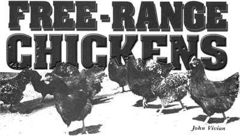 WILD HEN AND DAY-OLD CHICKS |
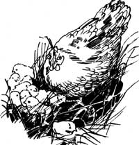 Introducing day-old chicks to a homemade brooder |
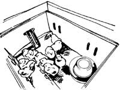 Rick's homemade feeder |
|
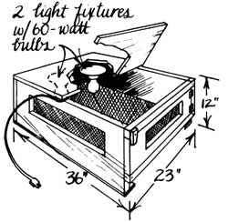 |
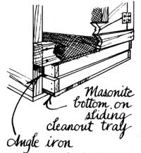 |
|
|
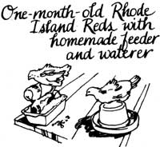 |
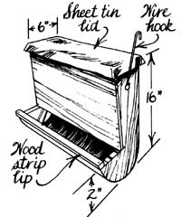 |
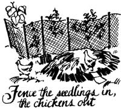 |
|
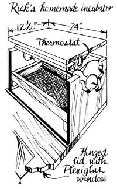 |
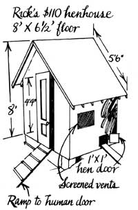 |
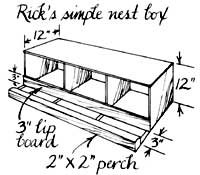 |
|
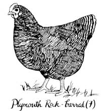 |
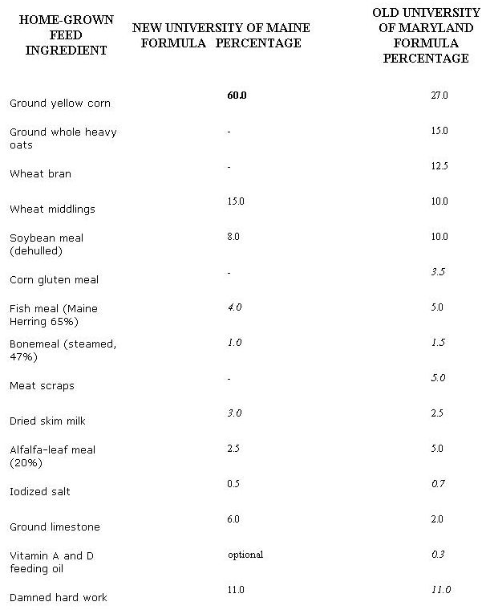 |
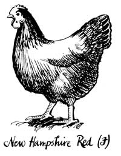 |
|
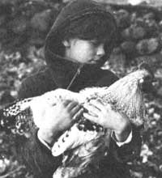 |
|
|